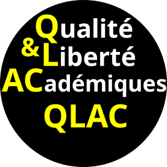
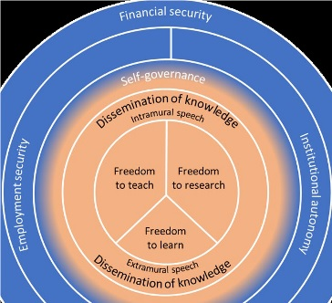

|
 |
QLAC |
Nos statuts
Nos textes sur la liberté académique
Bibliographie et sitographie
Les composantes de la liberté académique:


Rechercher sur le site :

Fil d'actualités
Conférence du Conseil de l’Europe sur la liberté académique, « des défis à une protection renforcée », les 25 et 26 novembre 2026, avec le président du SAGES et deux de ses coauteurs d’un article sur la liberté académique (25/11/2026).
« Les abus et les fraudes aux aides à l'apprentissage », rapport de la Cour des comptes (25/11/2026).
IA et éducation : une résolution mondiale pour la protection des données (CNIL) (21/11/2026).
Arrêté du 28/10/2026 portant organisation du scrutin pour le renouvellement du Conseil national des astronomes et physiciens (20/11/2026).
« Les bibliothèques universitaires sont envahies par des robots IA, mettant en danger l'accès du public » (CBC) (10/11/2026).
« Les universités au cœur de la nouvelle norme européenne en matière de la littératie en IA » (Conseil de l'Europe) (8/11/2026).
Déclaration de Paris sur l'indépendance des académies et la liberté académique S7-2026 (7/11/2026).
Rapport de la Cour des comptes sur les unités mixtes de recherche (23/10/2026).
Rapport de la Cour des comptes sur les outils bureautiques et collaboratifs au sein de l'Etat (23/10/2026).
Leçons à tirer du rejet de référé-liberté contre la fermeture administrative des universités (article du blog academia.hypothses.org) (22/10/2026).
Droits et devoirs des personnels en cas de fermeture administrative des universités (article du blog academia.hypothses.org) (21/10/2026).
A l'université de Nanterre, les arrêtés de la présidence sont publiés après les décisions prises (article du blog academia.hypothses.org) (21/10/2026).
Coût des études universitaires au Royaume-uni (BBC) (13/10/2026).
Fonctionnement des prêts étudiants pour les frais d'études universitaires au Royaume-uni (BBC) (13/10/2026).
« De l'ambition Nobel aux décisions budgétaires : l'Europe doit investir dans son avenir ». Appel de la Ligue européenne des universités de recherche (LERU) à la présidence du Conseil de l'UE (9/10/2026).
« L'IA peut-elle être mon nouveau partenaire de laboratoire » (Emission BBC) (8/10/2026).
« Enseignement supérieur : qui aura encore accès aux études demain ? » Emission France culture (4/10/2026).

|
Adresse postale: QLAC 8 rue Colbert 06110 LE CANNET |
|